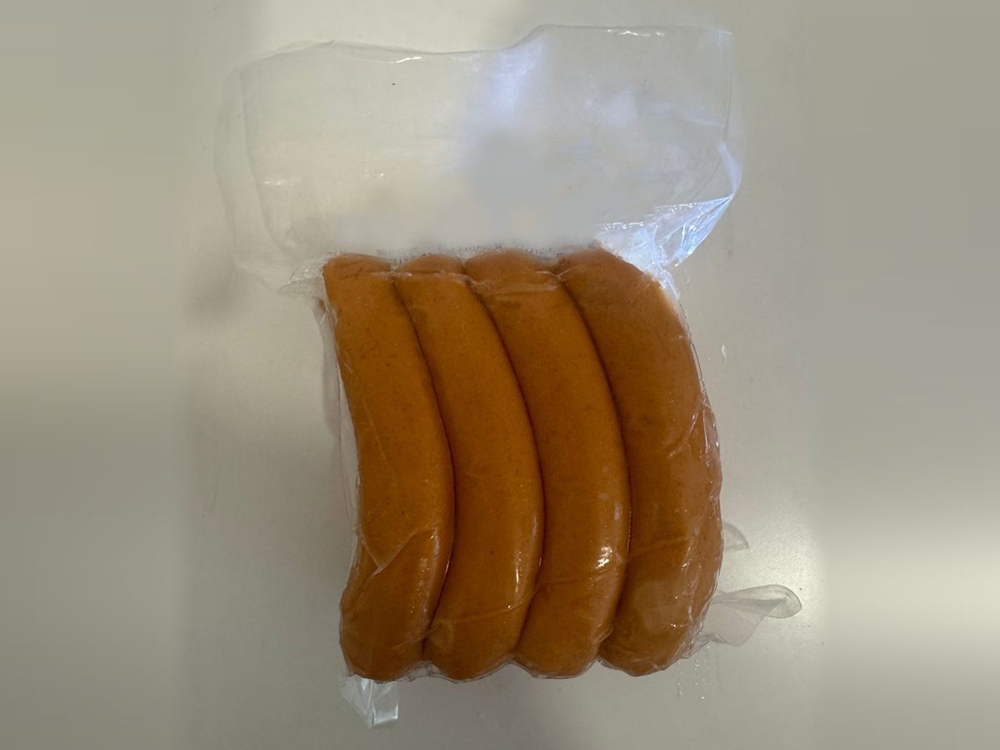
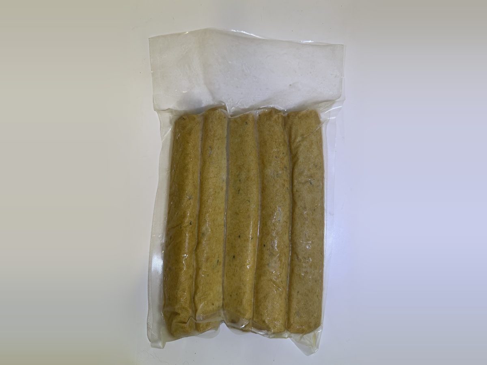
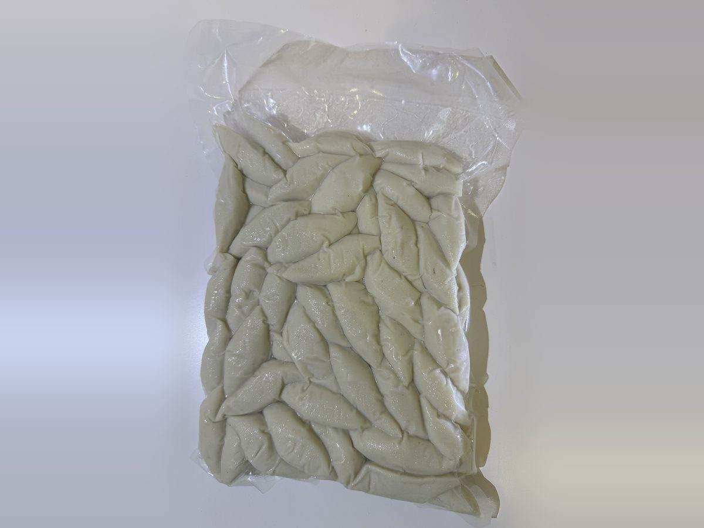

ถุงสุญญากาศเหมาะกับสินค้าอะไร
เลือกจากสินค้าที่คุณจะบรรจุ ขนาดและความหนาทำตามสินค้าจริงของคุณได้

ถุงสุญญากาศใส่เนื้อสัตว์ ร้านเนื้อ
ดีอย่างไร: ถุงใสแนบไปกับชิ้นเนื้อ เห็นสีและลายเนื้อชัด ลูกค้าเลือกได้จากหน้าตู้โดยไม่ต้องแกะดู
ขอราคาถุงแบบนี้
ถุงสุญญากาศใส่ของแปรรูป ขายหน้าตู้แช่
ดีอย่างไร: สีสินค้าเด่นผ่านถุงใส ดูสะอาดน่าซื้อเมื่อวางในตู้แช่ พิมพ์โลโก้แบรนด์ลงถุงได้
ขอราคาถุงแบบนี้
ถุงสุญญากาศใส่ของฝาก อาหารพื้นเมือง
ดีอย่างไร: สินค้าเรียงอยู่กับที่ ไม่ขยับระหว่างขนส่ง และมีพื้นที่ปากถุงเหลือไว้ติดฉลากแบรนด์
ขอราคาถุงแบบนี้
ถุงสุญญากาศใส่อาหารทะเล ของแช่แข็ง
ดีอย่างไร: ดูดแล้วถุงแบน วางซ้อนประหยัดที่ในตู้แช่ เนื้อไนลอนเหนียว ทนการแช่แข็ง เพิ่มความหนาได้ถ้าสินค้ามีเหลี่ยมคม
ขอราคาถุงแบบนี้ขนาดถุงสุญญากาศทั้งหมด (ซม.) สั่งผลิตได้ทุกขนาด
ถุงซีลสุญญากาศ ถุงแวคคั่มขนาดที่ใช้กันในตลาด ไม่มีขนาดที่ต้องการก็ทำตามขนาดสินค้าของคุณได้ วัดเป็นนิ้วส่งมาก็ได้
ถุงสุญญากาศขนาดเล็ก
เหมาะกับ ขนมอบ ของแห้ง เครื่องเทศ สินค้าชิ้นเล็ก
ถุงสุญญากาศขนาดกลาง
เหมาะกับ ไส้กรอก หมูยอ กุนเชียง ปลาแดดเดียว
ถุงสุญญากาศขนาดใหญ่
เหมาะกับ เนื้อสัตว์ อาหารทะเล ข้าวสาร ของแช่แข็ง
ไม่แน่ใจว่าใช้ขนาดไหน? ถ่ายรูปสินค้าหรือถุงเดิมแล้วส่งมาทาง LINE เราแนะนำขนาดและความหนาให้ พร้อมบอกขั้นต่ำและราคาต่อใบ อ่านเพิ่มเรื่องขั้นต่ำและระยะเวลาผลิต และโครงสร้างฟิล์มแต่ละแบบ